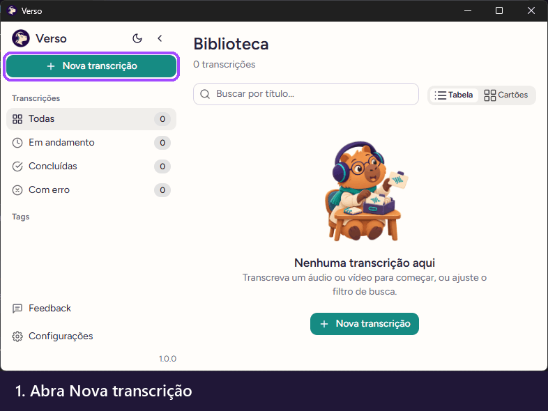
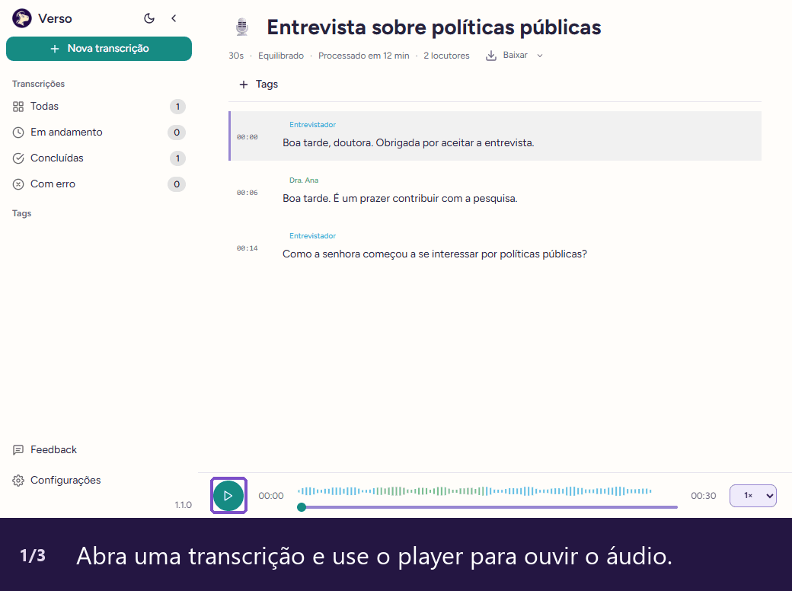
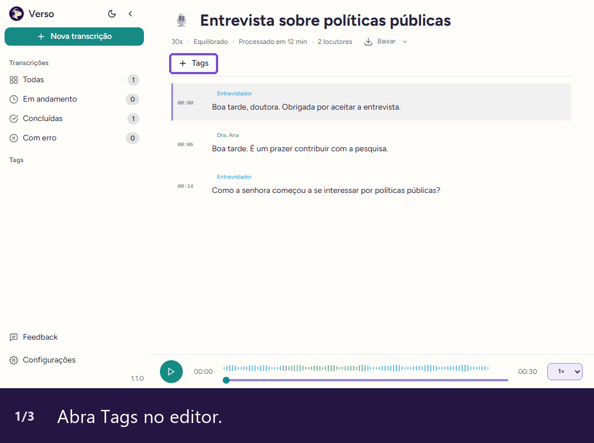
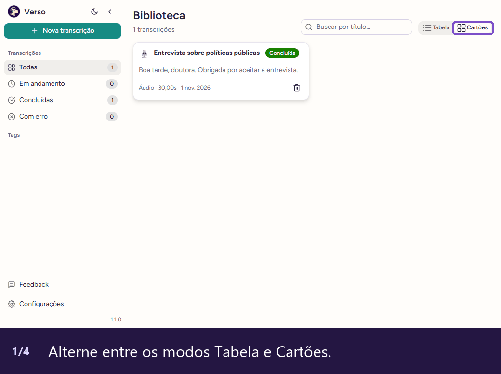
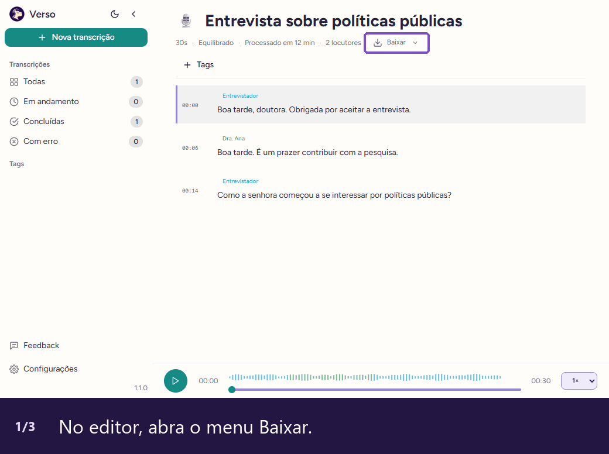
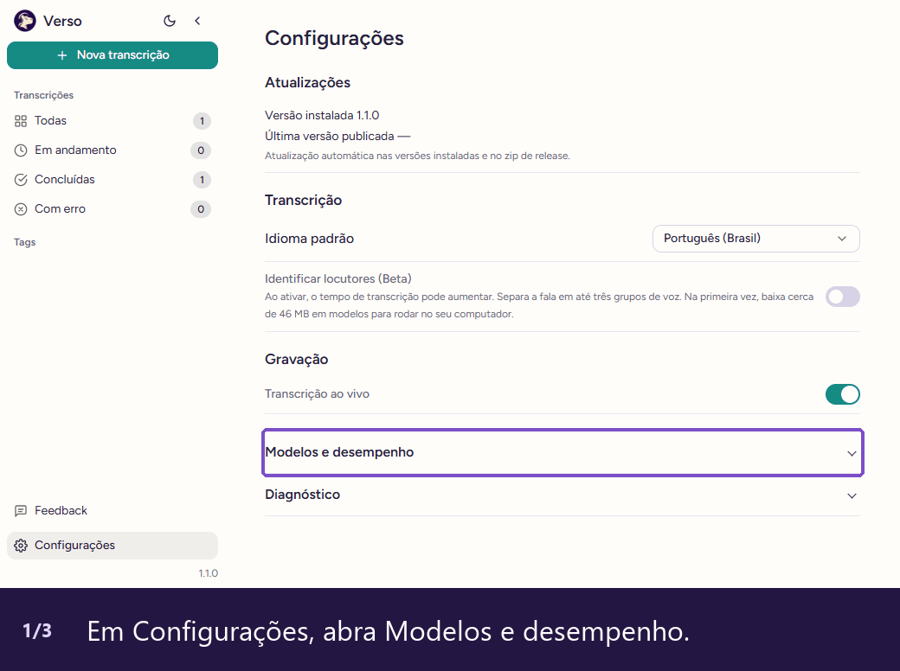

Importar um áudio ou vídeo
Transforme gravações como entrevistas em MP3 e aulas em MP4 em texto. Em Nova transcrição, selecione o arquivo, confira o título e clique em Transcrever.

O Verso transcreve entrevistas no seu computador. Ouça o áudio enquanto revisa o texto e exporte sua transcrição em RTF acadêmico.
Um aplicativo de transcrição local, criado a partir de uma necessidade concreta de pesquisa.
O Verso nasceu para ajudar estudantes de mestrado da USP a transcrever entrevistas sem custo no próprio computador. No mesmo aplicativo, você pode ouvir a gravação e revisar a transcrição.
Para preparar o apêndice do seu TCC, dissertação ou tese, exporte a transcrição em RTF acadêmico editável, com formatação compatível com a ABNT NBR 14724.
Ver como exportarProjeto independente. A menção à USP descreve o contexto de criação.

O reconhecimento de fala acontece localmente. Nos pacotes ZIP e EXE, banco de dados, gravações, modelos e logs ficam na pasta data ao lado do executável.
Revise antes de citar
A transcrição automática pode falhar em nomes, números e termos específicos. Confira os trechos ouvindo o áudio.
Escolha o pacote para o seu sistema operacional.
Instalador alternativo para Windows no GitHub
No Windows, o componente WebView2 já vem instalado ou é adicionado pelo próprio instalador. No Linux, verifique se o WebKitGTK está instalado — na maioria das distribuições ele já vem pronto.
MP3, MP4 e outros formatos
O FFmpeg já vem com o Verso.
Da escolha do arquivo à exportação, com capturas da interface e GIFs passo a passo.
Transforme gravações como entrevistas em MP3 e aulas em MP4 em texto. Em Nova transcrição, selecione o arquivo, confira o título e clique em Transcrever.

Use o player e a forma de onda. Clique no tempo de uma fala para ir direto a ela, corrigir o texto ou ajustar o locutor.

Agrupe transcrições por tema ou pesquisa. No editor, abra Tags para reutilizar uma etiqueta ou criar uma com nome e cor.

Veja quais gravações ainda estão na fila e encontre trabalhos concluídos pela busca por título. Alterne entre tabela e cartões.

No menu Baixar, escolha RTF acadêmico para um documento editável com formatação ABNT, locutores e marcações de tempo. Use TXT para texto simples ou SRT e VTT para legendas.

Em Configurações → Modelos e desempenho, escolha Parakeet TAGARELA para português brasileiro ou ajuste o perfil do Whisper conforme suas prioridades de velocidade e precisão.

Para trocar o motor, abra Configurações, entre em Modelos e desempenho e altere a opção Motor de transcrição. A escolha depende do computador e dos idiomas da gravação — na dúvida, fique no padrão, que funciona em qualquer máquina.
Use quando o computador tem placa de vídeo dedicada (a chamada GPU, que acelera a transcrição) ou quando precisa transcrever em diferentes idiomas. Sem placa de vídeo, ele também funciona — só que mais devagar.
TAGARELA é a adaptação do Parakeet voltada ao português brasileiro, treinada com fala de podcasts. É a opção indicada para computadores comuns e gravações em português.
Os modelos são baixados sob demanda e armazenados no computador. A transcrição automática pode errar nomes, números e termos específicos; confira o texto ouvindo o áudio antes de usar citações.
Não. O Parakeet TAGARELA roda em CPU. O Whisper também pode usar CPU, embora possa demorar mais; a variante GPU oferece aceleração quando o computador é compatível.
O Verso aceita MP3, WAV, M4A, MP4, WEBM e OGG.
O Verso baixa o modelo escolhido antes de transcrever. O tamanho varia: o TAGARELA tem cerca de 890 MB; os perfis do Whisper vão de aproximadamente 142 MB a 1,2 GB.
Sim. Nomes, números, falas sobrepostas, sotaques e termos específicos podem ser reconhecidos incorretamente. Confira o texto ouvindo o áudio, especialmente antes de usar citações.
O reconhecimento e o armazenamento são locais. Nos pacotes ZIP e EXE, os dados ficam na pasta data ao lado do executável.